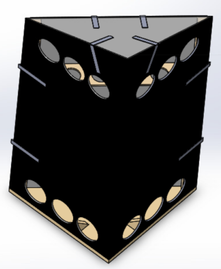
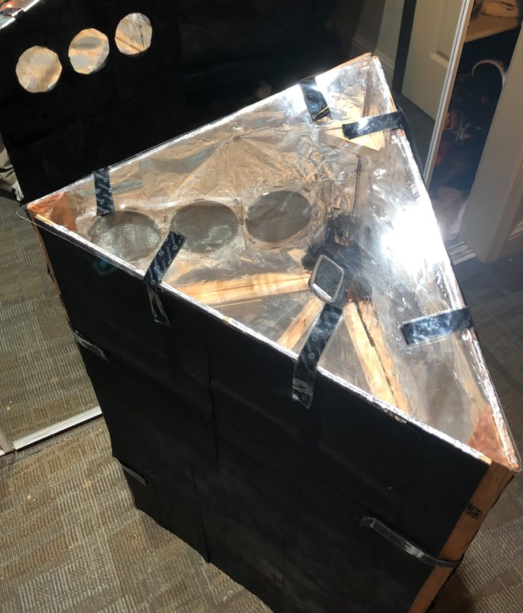
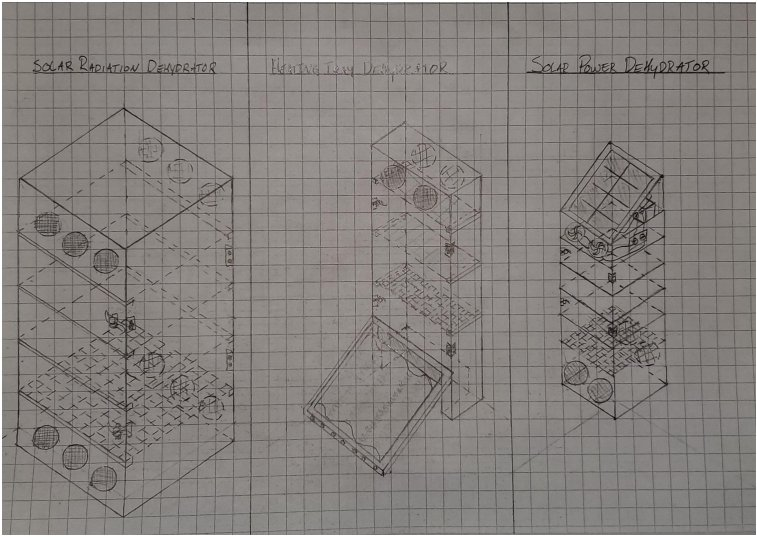
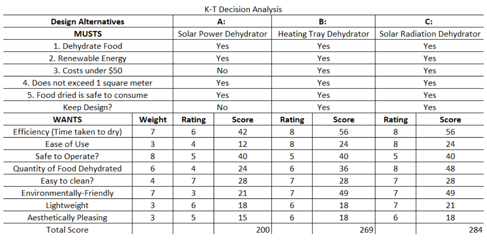
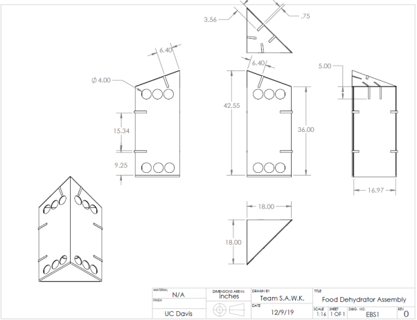
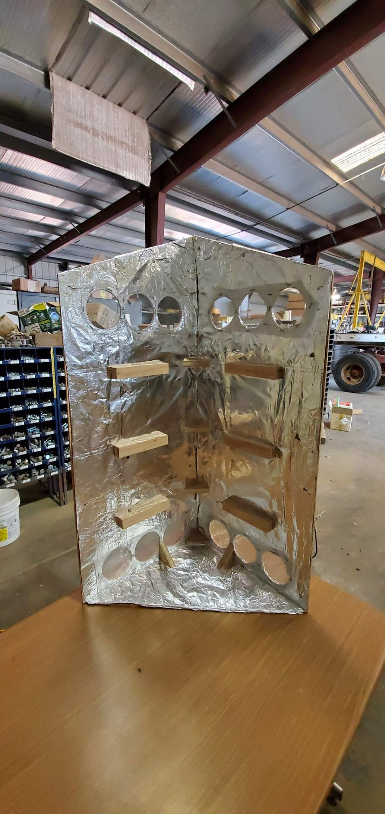
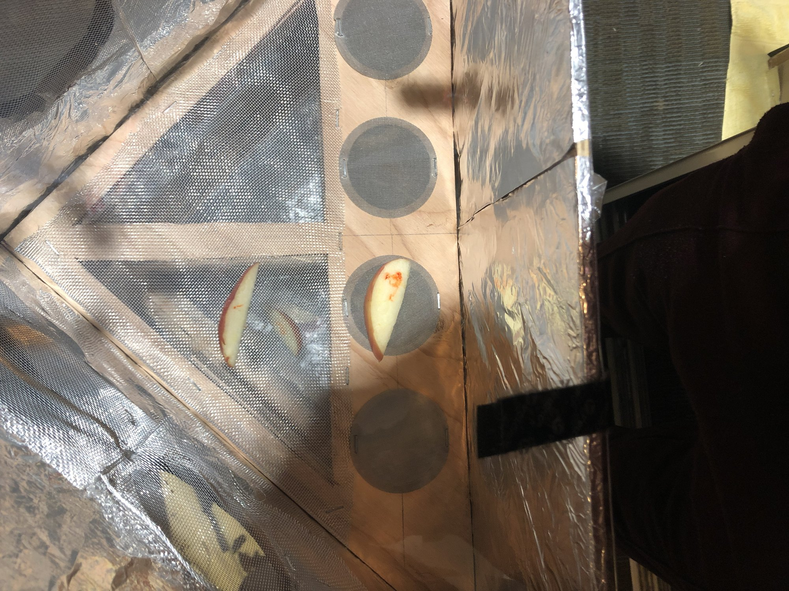
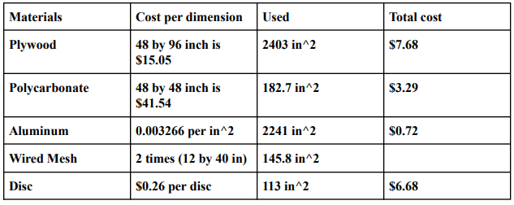

SOLIDWORKS • PROTOTYPING • EXPERIMENTAL DESIGN
Solar Food Dehydrator
Design, fabrication, and experimental evaluation of a low-cost renewable-energy food dehydrator, combining CAD, prototype manufacturing, airflow design, and statistical testing.

01 / OVERVIEW
Low-cost food preservation using renewable energy.
The objective of the project was to design and build an economical food dehydrator powered by renewable energy.
The system needed to provide sufficient heat and airflow to remove moisture from food while remaining inexpensive and practical to fabricate.

Completed food dehydrator prototype
02 / DESIGN CONSTRAINTS
Engineering within cost, schedule, and performance limits.
Budget
The original design constraint required construction for $50 or less.
Schedule
The full design, fabrication, and testing process had to be completed within 10 weeks.
Renewable Energy
The system needed to use renewable energy rather than relying on conventional heating.
Heat
Internal temperature needed to exceed ambient temperature to promote dehydration.
Airflow
Ventilation was required to remove moisture released during heating.
Food Safety
The device needed to safely dehydrate food while limiting contamination.

Preliminary design concepts evaluated during early development
03 / CONCEPT SELECTION
Comparing multiple design alternatives.
Three concepts were considered: a solar-radiation dehydrator, a heating-tray dehydrator, and a solar-powered dehydrator.
A weighted decision-analysis process was used to evaluate required criteria and preferred performance characteristics before selecting the final concept.

KT decision analysis used to compare and select the final design concept
04 / CAD DESIGN
Translating the concept into a manufacturable design.
SolidWorks models and engineering drawings were developed to define the dehydrator geometry, walls, shelves, door, ventilation openings, support components, and transparent top cover.
The final design used a triangular profile to reduce material usage while maintaining the functional requirements of the dehydrator.

Engineering drawing of the selected food dehydrator design
05 / FINAL DESIGN
Passive solar heating with natural airflow.
20° Transparent Cover
A sloped polycarbonate top was used to improve solar-radiation exposure.
Ventilation Openings
Openings at the top and bottom encouraged airflow through the enclosure.
Mesh-Covered Vents
Mesh prevented insects from entering while still allowing airflow.
Sliding Shelves
Three removable shelves improved airflow around the food and made cleaning easier.
06 / FABRICATION
Building and iterating on a physical prototype.
Fabrication involved cutting plywood components, drilling ventilation openings, installing shelf rails, attaching mesh, fitting the polycarbonate cover, and assembling the enclosure.
Several issues required redesign during fabrication, including dimensional errors, shelf breakage, interference with the cover, and fit adjustments.

Prototype fabrication and assembly
07 / EXPERIMENTAL TESTING
Measuring dehydration performance over time.
Apple and banana samples were placed on two different support materials: woven mesh and wire cloth.
Samples were weighed over a 12-hour test period, with measurements taken every four hours to quantify mass loss and compare drying performance.

Prototype testing using food samples to evaluate dehydration performance
08 / RESULTS
Mesh type affected banana drying performance.
Average apple mass loss on woven mesh across all samples.
Average banana mass loss on woven mesh.
Average banana mass loss on wire cloth.
Apple dehydration results did not show a statistically significant difference between woven mesh and wire cloth.
Banana samples, however, showed greater mass loss on woven mesh, and the difference remained significant even when evaluated using a 99% confidence interval.
The team attributed the improved banana drying performance to increased airflow through the woven mesh.
09 / COST ANALYSIS
A low-cost prototype with manufacturing tradeoffs.
The material cost of the prototype was estimated at approximately $33.31.
Including shop labor, the estimated project cost increased to approximately $113, highlighting assembly labor as an important consideration for future manufacturability.

Economic analysis and estimated project costs
10 / MY CONTRIBUTION
Testing, analysis, fabrication, and project coordination.
I helped coordinate team meetings and contributed to research, project planning, the Gantt chart, network diagram, and critical-path analysis.
I also participated in prototype fabrication by cutting wood components and assembling the structure.
A major part of my contribution was analyzing the experimental data, including calculation of confidence intervals for apple and banana mass-loss results and preparation of the final results and conclusions.
11 / ENGINEERING TAKEAWAY
Design is only complete after building and testing.
This project connected conceptual design, CAD, fabrication, experimental testing, statistics, economics, and project management into one complete engineering design cycle.
FULL PROJECT DOCUMENTATION
Food Dehydrator — Final Engineering Report
View the complete project report for additional details on preliminary concept development, KT decision analysis, CAD design, fabrication, testing, project planning, and economic evaluation.
View Full Engineering Report ↗12 / TECHNICAL SKILLS